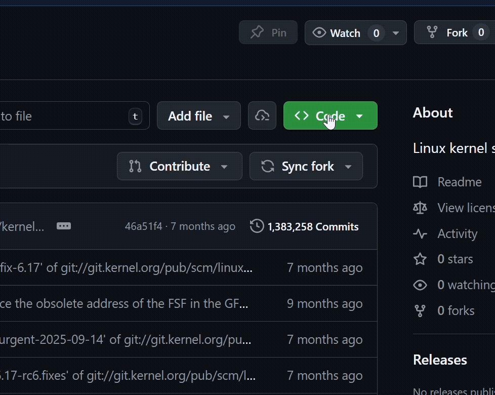
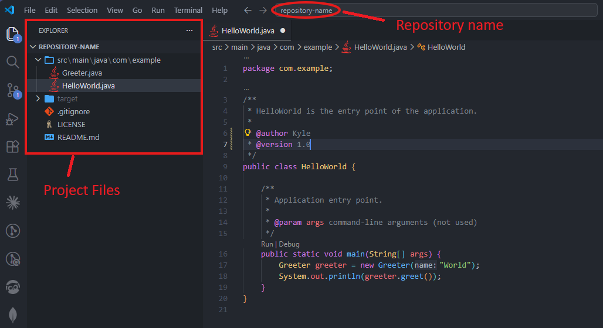

Cloning a Repository
Overview
Cloning is the first step to working with any existing project on GitHub. When you clone a repository, you create a local copy of the entire project on your computer, including all of its files, folders, and version history. This allows you to work on the project offline and push your changes back to GitHub when you are ready.
By the end of this task, you will be able to:
- Find and copy a repository URL from GitHub
- Clone a repository to your local machine using the terminal
- Open the cloned project in Visual Studio Code
- Verify the clone was successful
Finding the Repository URL
Before cloning, you need to get the URL of the repository from GitHub.
- Open your web browser and navigate to github.com.
- Navigate to the repository you want to clone (e.g., your instructor's project repo or your own).
- Click the green <> Code button near the top-right of the repository page.
- Ensure that HTTPS is selected (it should be by default).
- Click the copy icon next to the URL to copy it to your clipboard.
Steps 3-5 Demonstrated
The GIF below demonstrates clicking the <> Code button, selecting HTTPS, and copying the repository URL.

HTTPS vs SSH vs GitHub CLI
You will notice there are three options: HTTPS, SSH, and GitHub CLI. For this guide, we will use HTTPS because it is the simplest to set up. SSH requires generating and configuring SSH keys, while GitHub CLI requires installing GitHub's command-line tool, both are a more advanced topic.
Opening the Terminal in VS Code
Now that you have the repository URL copied, open VS Code and navigate to the folder where you want to store the project.
- Open Visual Studio Code.
- Open the integrated terminal by pressing Ctrl+` or navigating to Terminal > New Terminal in the menu bar.
- Navigate to the folder where you want to store the cloned project using the
cdcommand.

For example, to navigate to your Desktop:
Choosing a Location
Pick a location you will remember. Many developers create a dedicated folder like C:\Users\YourName\Projects or C:\dev to keep all their repositories organized.
Cloning the Repository
With your terminal open and in the right directory, you can now clone the repository.
-
Type the following command, replacing the URL with the one you copied from GitHub:
-
Press Enter and wait for the cloning process to complete.
You should see output similar to this:
Cloning into 'repository-name'...
remote: Enumerating objects: 42, done.
remote: Counting objects: 100% (42/42), done.
remote: Compressing objects: 100% (30/30), done.
Receiving objects: 100% (42/42), 15.20 KiB | 3.80 MiB/s, done.
Success
If you see a message like the one above without any errors, your repository has been cloned successfully!
Common Error: Repository Not Found
If you see fatal: repository not found, double-check that:
- The URL you copied is correct
- The repository is public, or you have access to it if it is private
- You do not have any typos in the URL
Opening the Cloned Project
Now that the repository is on your machine, open it in VS Code.
-
Navigate into the newly created folder in the terminal:
-
Run the following command to open the project in VS Code:
This will open a new VS Code window with all the project files visible in the Explorer panel on the left.

Alternative Method
You can also open the folder manually by going to File > Open Folder in VS Code and selecting the cloned repository folder.
Verifying the Clone
To confirm everything is set up correctly, run the following commands in the terminal.
-
Run
git statusto check the state of the repository:You should see output like:
-
Run
git remote -vto verify the remote connection:This should display the GitHub URL you cloned from:
Success
If both commands return the expected output, you have successfully cloned the repository and are ready to start working!
Conclusion
In this task, you learned how to:
- Locate and copy a repository URL from GitHub
- Clone a repository to your local machine using
git clone - Open the cloned project in Visual Studio Code
- Verify the clone with
git statusandgit remote -v
You now have a local copy of the repository on your computer. In the next task, you will learn how to make changes, commit them, and push them back to GitHub.